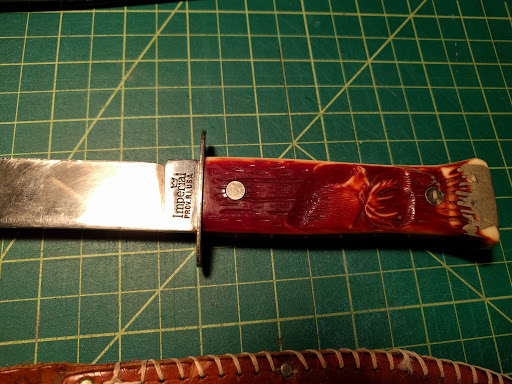

I was recently given an Imperial 8.5in "Stag Head" hunting knife from my good friend, Mr. Pete. The following pictures show exactly the condition in which I received the knife.
I've found reports online that knives stamped with "Imperial Prov.R.I.USA" on the tang were manufactured in Providence, Rhode Island back from 1916 to 1920.

The knife steel is in good condition with minimal marring or chipping. Nothing that can't be fixed via a proper sharpening. The handle still retains most reddish/brown paint scheme, but you can see the mother of pearl beneath it. The rivets are tight, but need polishing. Mr. Pete broke the foot of the handle many many moons ago when he was a little kid and his grandfather fashioned some epoxy as a replacement. The knife has a leather sheath that is in good condition. The stitching is tight, but loose in one single area. This can probably be fixed. The button buckle needs to be cleaned, but still functions.